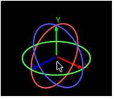

Transform handles appear when a 3D object with transform capabilities is loaded into the Properties Bin. The colors of the handles correspond to the axes available in 3D space: red transforms the x-axis, green transforms the y-axis, and blue transforms the z-axis.
• Drag an object to move it on any axis.

• Shift+drag to constrain movement to one axis.
• Ctrl+click (Mac users Cmd+click) between the rotation rings and drag to rotate the object on any axis.

• Click on a specific axis ring and drag to constrain the rotation to one axis.

• Ctrl+Shift+click (Mac users Cmd+Shift+click) and drag on the central yellow square to scale uniformly on all three axes.

• Ctrl+Shift+click (Mac users Cmd+Shift+click) and drag on a single axis square to scale on that axis.

|
|